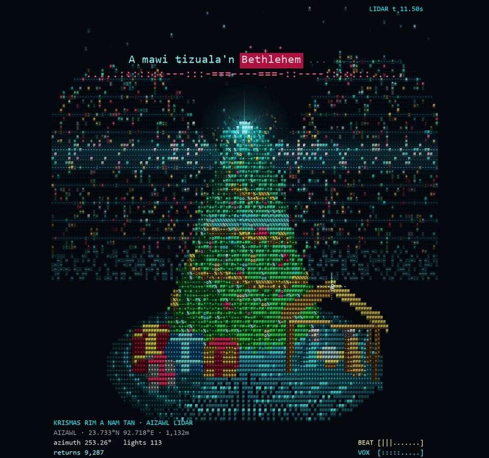

Free Python code / from the Reels
WATCH IT.
RUN IT.
The visuals from your feed, on your own screen. Pick a project, download the code, and press Run in VS Code.
2 projects · Desktop Python · Name + email to download
01 / MUSIC INTO MOTION
I Hmangaih Kha
A heart made
of lyrics.
Blue and white words build a glowing heart, split apart, and dissolve. Timed lyrics and chords follow the supplied song excerpt.
lyricsvisualizer.py
- Audio included in ZIP
ihmangaihkha.mp3- Controls
- Esc or close the window to exit. Run again to replay.
Designed for the 38-second excerpt shown in the Reel. Another track will play, but the built-in lyric and chord timing will need editing.

02 / AIZAWL IN ASCIIKrismas LiDAR
A little world.
Made of symbols.
An ASCII Christmas tree, gifts, and a nativity pavilion inside an Aizawl-inspired LiDAR scene. Drag to rotate and choose between three lyric layouts.
krismasvisualizer.py
- Audio included in ZIP
nov christmas song mizo.mp3- Controls
- 1 / 2 / 3: lyric mode · Drag: rotate · Scroll: zoom · Space: pause · R: replay · Home: reset
Loops the song and animation. The built-in lyrics and audio envelopes follow the 15-second excerpt from the Reel.
From download to your desktop
Three steps.
Then press Run.
Unzip your project.
Install Python 3.10 or newer and VS Code with the Python extension. Extract the ZIP into a folder you can find.
Install the packages.
Open that folder in VS Code. In its terminal, run:
python -m pip install -r requirements.txt
On Windows, use py -m pip install -r requirements.txt if python is not found. Select that same Python interpreter in VS Code.
Run the file.
Keep all extracted files together, including the MP3. Open lyricsvisualizer_desktop.py or krismasvisualizer_desktop.py and choose Run Python File. A separate visualizer window will open.
Project ZIPs include desktop and experimental Android launchers, shared visual code, matching audio, and setup instructions. The standalone .py downloads contain code only. Changing songs requires updating the timing in the code.
Using Android? Try Pydroid 3
Experimental — these projects have not been tested on an Android device. Desktop is recommended for the original window layout. Android launchers fit the display, start at 15 FPS, and add touch controls. Pydroid 3 supports Pygame 2, but that does not guarantee these visualizers will work on every phone.
Install Pydroid 3 from Google Play ↗.
Download a project ZIP above and extract it with your phone’s file manager. Keep the included MP3 beside the Python script. Do not run the script from inside the ZIP.
In Pydroid 3, use its Pip package manager to install pygame for Lyric Heart. For Krismas LiDAR, install pygame, numpy, and Pillow. If package installation fails, follow Pydroid’s package instructions or use a desktop.
Open the extracted lyricsvisualizer_android.py or krismasvisualizer_android.py in Pydroid 3 and tap Run. Keep the shared visualizer script and mobile_controls.py beside it. Allow access to the extracted folder if Android requests it. The scene fits the available screen without stretching. Portrait or landscape can be used.
Optional Pydroid terminal command, from the extracted folder:
python lyricsvisualizer_android.py --width 0 --height 0 --fps 15
For Christmas, use krismasvisualizer_android.py instead. Zero width and height use the available display; 15 FPS reduces drawing load without slowing the song. If it still runs slowly, try --fps 10.
Fonts, audio playback, speed, and touch input may differ. Use the bottom Pause/Play, Replay, and Exit buttons. Krismas also has three mode buttons, drag rotation, Reset, and −/+ zoom. Pinch zoom is not implemented. These scripts do not run directly inside Instagram, YouTube, or your phone browser. If the app errors or the layout does not fit, use the desktop instructions above.
“No module named pygame” or “Song not found”?
Run the install command using the same Python interpreter selected in VS Code. For missing audio, check the exact filename and place the MP3 in the same extracted folder as the script. Windows may hide filename extensions.